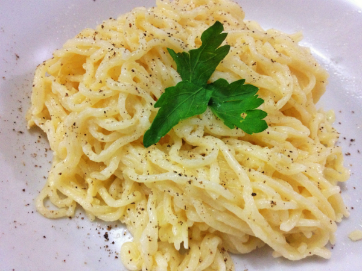

Miojo na Manteiga
Miojo escorrido com manteiga e orégano. O jeito mais simples de dar sabor ao pacote.
Tempo de preparo
5 minutos
Louça suja
1 panela
Porções
1 porção
Dificuldade
Fácil
Imagem da receita

Vídeo do preparo
Ingredientes
- 1 pacote de miojo
- 1 colher de sopa de manteiga
- 1 colher de chá de orégano seco
- Sal a gosto
- Água para o cozimento
Modo de preparo
- Ferva cerca de 500 ml de água na panela.
- Cozinhe o miojo por 3 minutos.
- Escorra toda a água e volte o macarrão para a panela ainda quente.
- Junte a manteiga e mexa até derreter e envolver todo o macarrão.
- Acrescente o orégano e o sal, misture e sirva.
Dica: use o sachê de tempero do miojo com moderação. Ele já tem bastante sal, então prove antes de acrescentar mais.